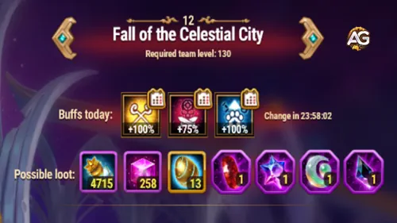

Uma vez que essas torres são destruÃdas, o chefe se torna vulnerável. Monte seus heróis mais fortes com mascotes que contra-atacam
o reforço do dia, concentre o dano com cuidado e lembre-se: nenhum ataque pode causar mais de 1% da vida dele.
Persistência, e não explosões, levará à vitória.
Nenhum ataque pode causar mais de 1% da vida máxima
Imune à redução de energia
PossÃveis Recompensas do Mapa nº12
Uma das maiores motivações para concluir esta aventura são as recompensas. O mapa 12 concede uma mistura equilibrada
de poções, partÃculas e pedras raras usadas para mascotes. Aqui está o que você pode esperar:

PossÃveis Recompensas do Mapa nº12, Hero Wars Dominion Era.
Portanto, da próxima vez que você e seus companheiros de guilda se reunirem para esta missão, lembrem-se não se trata apenas de derrotar inimigos.
É sobre construir uma história juntos, um movimento de cada vez. A Queda da Cidade Celestial irá testá-los,
mas com trabalho em equipe, cada torre cairá e o chefe se curvará diante de sua força unida.
Você gostou do nosso Guia do Mapa de Aventura nº12 para Hero Wars PC: Web e Facebook? Há algo que não entendeu ou gostaria de sugerir mudanças? Convidamos você a se juntar à nossa sessão de comentários na página do Alexandre Games Blog. Não hesite em expressar sua opinião, clarificar suas dúvidas e compartilhar sua sugestões. Clique no botão abaixo para começar:

 Guia do Mapa de Aventura de PET nº6 – Hero Wars: Dominion Era
Guia do Mapa de Aventura de PET nº6 – Hero Wars: Dominion Era
 Guia do Mapa de Aventura de PET nº7 – Hero Wars: Dominion Era
Guia do Mapa de Aventura de PET nº7 – Hero Wars: Dominion Era
 Guia do Mapa de Aventura de PET nº8 – Queda da Cidade Celestial
Guia do Mapa de Aventura de PET nº8 – Queda da Cidade Celestial
 Guia do Mapa de Aventura de PET nº9 – Hero Wars: Dominion Era
Guia do Mapa de Aventura de PET nº9 – Hero Wars: Dominion Era Como Vencer o Mapa de Aventura nº10 em Hero Wars: Dominion Era
Como Vencer o Mapa de Aventura nº10 em Hero Wars: Dominion Era